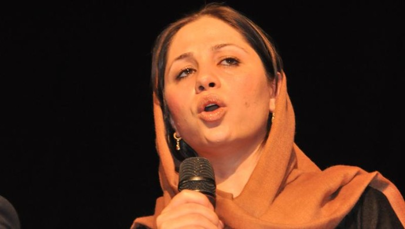

پذيرش > سایت نوشته ها > حمیرا قادری (نویسنده و فعال زنان): زن باید از جنسیت خودش لذت ببرد و به جنسیت خودش (...)


 حمیرا قادری (نویسنده و فعال زنان): زن باید از جنسیت خودش لذت ببرد و به جنسیت خودش افتخار کند حمیرا قادری (نویسنده و فعال زنان): زن باید از جنسیت خودش لذت ببرد و به جنسیت خودش افتخار کند
14 تیر 1392 - - نسخه قابل چاپ
متن سخنرانی حمیرا قادری (نویسنده و فعال زنان) در جشن آرمان شهر
در آغاز اجازه بدهید که تشکر و قدردانی داشته باشم از حضور مستمر و همزمان مثمر حرکت شهروندی بنیاد آرمان شهر.
به حتم در جامعهای که بیش از هرچیز ما به گفتمان نیازمند هستیم؛ گفتمان حتا با تاریخ ده ساله خود در افغانستان هنوز بحث جدیدی است. حضور نهادها، جامعه مدنی، سازمانها و انجمنهایی که قرار است به گفتمانها تن بدهند و از طریق گفتمانها، آموزشهای اصلاحی را برای تغییر ذهنیت ما در جامعه داشته باشند به هرحال نقش بسیار ارزندهای در تحول فکری فرهنگی ما داشته اند.
عنوان صحبت من بحث روی هفت سال کارکرد آرمانشهر، در جلسات متعددش در مورد زنان است. میخواهیم بدانیم که برای بانوان این نهاد یا این حرکت شهروندی چه کارهایی انجام داده است. اجازه بدهید که در آغاز تاریخچه حضور نهتنها بنیاد آرمانشهر بلکه تمام نهادهای مدنی در افغانستان را بررسی کنیم.
بعد از فروپاشی دولت سیاه طالبان، دولتی سر کار آمد که در نگاه اول به نظر خیلیها قدرتمند و کارا بود؛ چرا که حمایت مردمی را با خود داشت؛ طوری که همه ما فکر میکردیم کبوتر صلح در کشور نشیمن گرفته و حمایت جامعه جهانی را هم باخود داشت چیزی که ما به شدت به خاطر مسائل اقتصادی و ناپایداری اوضاع سیاسی به آن محتاج بودیم. بنابراین رنگ دهه هشتاد رنگ بسیار جدید و خوشایند و امیدوارکنندهای برای ملت و همزمان برای دولت ما شد. چه در وجه دولت و چه در وجه نهادهای مدنی این حرکت قابل مشاهده بود. اما آن چه که در دهه هشتاد و پس از روی کار آمدن دولت جدید، بیشتر از هر چیز دیگری احساس نیاز را تولید کرد، وجود جنبشهای خودجوش و تشکلهای غیر دولتی بود که میخواست در جامعه رنگ بگیرد؛ که کم کم هم گرفت. ناگهان طیفهای متفاوتی از اندیشههای همگرا بههم رسیدند و کنار هم نشستند و سوار بر گفتمان عدالتخواهی و برابریطلبی درعرصههای فرهنگی اجتماعی و سیاسی کنار هم رنگ گرفتند، برهم تاثیر گذاشتند و از هم تاثیر گرفتند. بسیار زود ما دورههای آزمون و خطا را پشت سر گذاشتیم. یعنی به نوعی چند گام از دولت خود در رسیدن به اهدافی که مدنظر بود پیش بودیم. به نوعی آن قدر این تجمعات و خواستهای سالم و درست، زیاد شد که ما با جنبشهای رنگین کمانی روبرو شدیم. شاید جزو دستاوردهای مهم ما حضور جامعه مدنی به شکل فعال خودش بود که این دستاوردها را میتوان در عرصه نظارتهای سیاسی مشاهده کرد. هدف از ایجاد تمام این جنبشها زدودن “ستمسنتهای” تبعیض گرایانه بود؛ ایجاد گفتمانهای مستقل برابرخواهی در عرصه فرهنگ، سیاست و اقتصاد در تشکیل یک جامعه سالم بسیار تاثیرگذار بود. به هرحال این مباحث در جامعه مدنی اتفاق افتاد هرچند که در گام اول به نوعی شبیه پروژه بود اما بعدا هرکدام از این نهادها پس از مدتی راه خاص خود را پیگیری کردند.
عدهای مسائل مالی را مدنظر خود قرار دادند؛ عدهای از نهادهای قدرت سیاسی حمایت کردند و فعالیتهای سیاسی را سرلوحه کار خود قرار دادند، اما خوشبختانه بسیاری از نهادها توانستند از این بحثها دور بمانند و بتوانند پروژههای گفتگو را تبدیل کنند به پروسههای گفتگو. این پروسههای گفتگو اکنون در افغانستان پابرجاست و در کنار اینکه مستمر بوده مثمرهم بوده است. حالا اجازه بدهید که یکی از نهادهای خوب را که دور از مسائل سیاسی از طریق فعالیتهای فرهنگی اجتماعی توانسته جایگاه خاصی در جامعه مدنی کسب کند را به شما معرفی کنم.
من به آرمانشهر به عنوان یک حرکت مدنی خودجوش نگاه میکنم که برای رسیدن حقوق مدنی ملت ازهیچ کوششی دریغ نکرده است. ما دو نوع عمران داریم؛ یک عمران که بر ساختوساز جغرافیای ویرانی اختصاص دارد که براساس مشکلات و آفتهای طبیعی و جنگهای بشری شکل میگیرد؛ و عمران بعدی، عمران فرهنگی است. عمران فرهنگی بسیار مهمتر و ارزندهتر از عمران جغرافیای ویران است. باد و باران فرهنگ را خراب نمیکند ولی جنگ فرهنگ را نابود میکند؛ مثلا ممکن است که ما یک ساختمان را در عرض شش ماه و یک شهر را در ظرف شش سال آباد کنیم ولی زمانیکه جنگ اجتماع و فرهنگ را خراب میکند ما نیازمند به زمان بسیار زیادی هستیم تا ویرانهها را آباد و عمران کنیم. تنها راه حل این معظل، حرکتهایی به مانند حرکتهای آرمانشهر است. البته این به این معنا نیست که ما فعالیتهای دیگر نهادهای مدنی را دستکم بگیریم ولی بحث این است که ما میخواهیم از یک حرکت کاملا مستقل، پویا و منسجم حرف بزنیم. یکی از کارهایی که آرمانشهر حداقل در این دو سه سالی که من در اکثر جلسات آن حضور داشتهام انجام داده، چاپ، انتشار و پخش کتابهای متنوع در حوزه زنان است. میخواهم بگویم که اکثر کتابهای آرمانشهر مسئله جنسیت را به چالش کشیده است. آرمانشهر تمرکز خاصی روی مسئله بانوان داشته است. این را شما میتوانید از انتشارات آرمانشهر به راحتی درک کنید. در کشورهای روبه توسعه، بحثهای جنسیتی بحثهای داغ اجتماعی هستند. در افغانستان هم بعد از فروپاشی طالبان بحث جنسیتی یکی مهمترین مباحث چند سال اخیر بود. به چالش کشیدن این مباحث پراکنده و نابجا و طرح مباحث تئوریک و سازمانیافته در مورد زنان یکی از مهمترین دستاوردهای آرمانشهر است. در کنار این بحث اساس صحبت آرمانشهر به نظر من، دوری از آپارتاید جنسیتی بود. این به این مفهوم است که شما در نگاه اول سعی کنید به آگاهی جنسیتی از خود برسید؛ یعنی اینکه مرد شما از مردبودن خود لذت ببرد و از اندام خودش لذت ببرد و با اندام خودش راحت باشد و از اندام خودش شرم نداشته باشد. در کنار آن زن هم باید از جنسیت خودش لذت ببرد و به جنسیت خودش افتخار کند. این بحث به معنای مفهوم آگاهی جنسیتی است از وجود خویشتن. آگاهی جنسیتی به مفهوم دوری از پریشانهویتی جنسی است. یعنی مرد ما به نام زن ما یاد نشود و غیرتاش هم بنا به تعریف از زنانگیهای زن نباشد. و بانوی ما هم به نام شوهر، برادر و فرزند خودش یاد نشود. این را آگاهی جنسیتی البته با تکیه بر بحثهای تئوریکی که دارد، یاد میکنند. وقتی شما از آپارتاید جنسیتی دوری میکنید در واقع میخواهید کم کم بحث را در کشور به گفتمان فراجنسیتی تبدیل کنید. این اتفاقی است که در کشورهای مدرن بوقوع پیوسته است. یعنی در کشورهای مدرن با استفاده از مفاهیم مدرن، دیگر مسئله هویت جنسی مطرح نیست و انسانها به خود و دیگران فراتر از هویت جنسی نگاه میکنند. در جوامع مدرن مهمترین شاخصه فرهنگی اجتماعی شاخصه انسانبودن است. بنابراین هرگاه شما بخواهید دولت خودتان را، که متشکل از مرد و زن است به فراتر از مسئله هویت جنسیتی ببرید، وجه انسانی بشر خیلی پررنگتر از قالب جنسیتی میشود.
رسیدن به چنین فرهنگی بستگی به وضعیت اجتماعی دارد. گاهی وقتها بعضی از این صحبتها در بعضی از جاها باعث میشود که کلام شما به سمت کفر و الحاد کشیده بشود و همزمان بعضی از این مباحث در بعضی از شهرها چینش و گزینش شده است و من فکر میکنم که آرمانشهر توانسته از پس تمام این مسائل برآید البته نتیجهگیری این مسئله برعهده ملت است. ملت در چه جایگاه تاریخی از ذهن و ذهنیت خودش قرار دارد و چقدر میتواند بپذیرد یا نه!
اساس کار آرمانشهر بر بنیاد آموزش بود آنطور که من شاهدش بودم. در کشورهای توسعهیافته تفاوت بین مرد و زن جدای از تفاوتهای کوچک دیگر، بحث مزد است یعنی امکان دارد یک زن در قبال کاری که میکند مزد کمتری نسبت به مرد بگیرد. اما در کشورهای روبه توسعه یا در حال توسعه تفاوت در مزد و علم است؛ یعنی صرف تفاوت بر اساس مزد نیست. ویرجینیا وولف میگوید که علم و ثروت در حق مردان و زنان هیچوقت به صورت مساویانه تقسیم نشده است. این به این معنی است که همیشه انباشت سرمایه و پیشرفت علم در دست یک جنس مشخص، یعنی جنس مذکر بوده است. و همیشه قالب مردسالاری بر ثروت و علم حاکم بوده است.
حالا بحث در مورد آرمانشهر این است که همیشه سعی کرده جنبه آموزشی داشته باشد چه در مورد جنسیت و چه در مورد مسائلی که ما را با گفتمانهای خودمان آگاه کرده است. مثلا در بخش هنر و ادبیات، قلعه حیوانات اثر جرج اورول را چاپ میکند؛ انتشار آن اصلا اتفاقی نیست و دارای مباحث عمیق اجتماعی سیاسی است. مراد من از آموزش و فعالیت آرمانشهر پرورش ذهنیت اجتماعی از طریق آگاهی رسانی است.
در کنار اینها آرمانشهر متوجه این قضیه شده که برای رسیدن به یک ساختار اقتصادی منسجم به عنوان مبنا و شاکله اجتماع، همیشه سعی کرده تا بلندگوی نگاه فرهنگی باشد و از ساختار انسانی دفاع کند. در کشورهای پیشرفته مهمترین و بیشترین هزینهها در بخش انسان سازی و انسان پروری صرف میشود. پس برای رسیدن به ساختارهای مناسب اجتماعی، فرهنگی، سیاسی و اقتصادی ما نیازمند به ساختار انسانی هستیم. بحث این است که برای رسیدن به چنین اعتلایی که مشخصه کشورهای پیشرفته است آرمانشهر به این نتیجه رسیده است که با همکاری نیروها و قوههای مختلف نهفته در جامعه میتواند به این خواست ارزشمند برسد. یادمان باشد که آموزش و دانش همیشه باعث پایداری است. توانمندسازی مردم به نوعی توانمند سازی جامعه است و توانمندسازی جامعه به نوعی افراد آگاه را پرورش میدهد و این چرخه آگاهی همچنان خواهد چرخید. این فقط در نشستها و گفتمانها اتفاق میافتد و این گفتمانها به نوعی ابزار مبارزه برتر است برای رسیدن به بهترها. بنابراین من احساس میکنم که آرمانشهر مسیرهای متفاوتی را برای رسیدن به خواست خود برگزیده است. آنچه که آرمانشهر را برای من مقدس ساخته، اتکا و اعتقاد به بحث هنر است؛ جشنواره فیلمی که آرمانشهر برگزار کرد بینظیر بود و این نشاندهنده آن است که ما در کنار آرد به آرت هم میاندیشیم. این اساس کار یک کشور مدرن است. کتابهایی که در بخش رمان به چاپ رسیده است، ولو با هر اندیشه و ایدئولوژیای که پشت آن است: مثل کتاب ویرجینیا وولف “اتاقی از آن خود” کاملا یک بحث عقیدتی از ایدئولوژی فمینیستی است. وقتی که کتابی از حوزه فرهنگی از ایران و افغانستان وتاجیکستان بهچاپ میرسد، مصداقی از این نکته است که برای آرمانشهر سنجش اجتماع و فرهنگ این حوزه بسیار با اهمیت است. آرمانشهر درتمام این سالها خواسته تا جایگاه زنان را چه در بخش آداب و چه در بخش رفتار ما بررسی کند. به طور مثال، در گذشته اگر دعوا یا نزاعی رخ میداد، این ریش سفیدان محل بودند که با استفاده از نفوذ خود سعی در حل نزاع داشتند ولی در حال حاضر حرکتهای شهروندی که به نوعی جایگزین نهادهای سنتی شده، سعی درکسب حقوق مردم از راههای قانونی و حقوقی است.
به هرحال آرمانشهر میخواهد به ما بیاموزد که برای رسیدن به وضع مطلوب در یک جامعه ما تنها موظف به رعایت قوانینی نیستیم که دولت تعیین میکند؛ بلکه باید دست به حرکتهای خودجوش و ابتکارات فرهنگی هم بزنیم چون این ما هستیم که باید برای اعتلای جامعه، فعالیت مدنی انجام بدهیم؛ یعنی خود ما مسئولیت خود را به عهده بگیریم.
آرمان شهر
ارسال به
بالاترین
،
توییتر
،
فریندفید
،
فیسبوک
در همين بخش :
 یک خبر تلخ؟ یک قانونشکنی؟ یک تصمیم بخشنامهای جدید؟ یک خبر تلخ؟ یک قانونشکنی؟ یک تصمیم بخشنامهای جدید؟
چرا بایست به سکسوالیته پرداخت؟ / نفیسه آزاد
آزارجنسی خانگی؛ «قربانی» نه، «نجات یافته»
زنان، بزرگترین بازندگان بهار عرب
سانسور از دیدگاه جنسیتی/الهه امانی
ديگر بخش ها :
طرح یک میلیون امضا
|
مقالات
|
سایت نوشته ها
|
اخبار
|
گزارش كمپين
|
گفت و گو
|
علیه سکوت
|
كوچه به كوچه
|
نامه های شما
|
گزارش ویژه
|
گفتگو با اعضا
|
ویژه سالگرد کمپین
|
تصویر برابری
|
دل آرام علی
|
تریبون
|
مقالات
|
تاریخ شفاهی
|
خارج از چارچوب
|
کتابخانه
|
درباره کمپین
|
کمپین در شهرها
|
کمپین در بند
|
صدای تغییر
|
ویژه 22 خرداد
|
لایحه حمایت از خانواده
|
گالری
|
عشا مومنی
|
امیر یعقوبعلی
|
خدیجه مقدم
|
راحله عسگری زاده و نسیم خسروی
|
پروین اردلان،جلوه جواهری، مریم حسین خواه، ناهید کشاورز
|
زینب پیغمبرزاده
|
سعیده امین، سارا ایمانیان، محبوبه حسین زاده، ناهید کشاورز و همایون نامی
|
احترام شادفر
|
نسیم سرابندی زاده،فاطمه دهدشتی
|
وبلاگ مهمان
|
پرونده خرم آباد
|
دستگیری ها
|
مریم مالک
|
پرستو اللهیاری
|
مهرنوش اعتمادی
|
سمیه رشیدی
|
Other Languages
|
همراهان
|
«فراخوان کمپین ده روز با بهاره هدایت»
| English
|